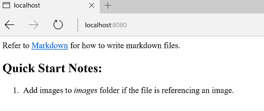
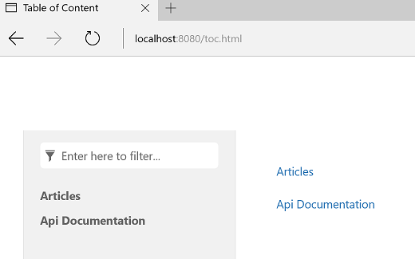

How-to: Create A Custom Template
Templates are organized as a zip package or a folder. The file path (without the .zip extension) of the zip package or the path of the folder is considered to be the template name.
Quickstart
Let's create a template to transform Markdown files into a simple html file.
Step 1. Create a template folder
Create a folder for the template, for example, c:/docfx_howto/simple_template.
Step 2. Add Renderer file
Create a file conceptual.html.primary.tmpl under the template folder with the following content:
{{{conceptual}}}
Now a simple custom template is created.
You may notice that DocFX reports a warning message saying that: Warning: [Build Document.Apply Templates]There is no template processing document type(s): Toc. It is because our custom template only specifies how to handle document with type conceptual.
To test the output of the template, create a simple documentation project following Walkthrough Part I or download the zipped documentation project directly.
In the documentation project, run docfx build docfx.json -t c:/docfx_howto/simple_template --serve. The -t command option specifies the template name(s) used by the current build.
Open http://localhost:8080 and you can see a simple web page as follows:

Add Preprocessor file
Step 3. Add Preprocessor file
Sometimes the input data model is not exactly what Renderer wants, you may want to add some properties to the data model, or modify the data model a little bit before applying the Renderer file. This can be done by creating a Preprocessor file.
Create a file conceptual.html.primary.js under the template folder with the following content:
exports.transform = function (model) {
model._extra_property = "Hello world";
return model;
}
Update the file conceptual.html.primary.tmpl with the following content:
<h1>{{_extra_property}}</h1>
{{{conceptual}}}
In the documentation project, run docfx build docfx.json -t c:/docfx_howto/simple_template --serve.
Open http://localhost:8080 and you can see _extra_property is added to the web page.

Merge template with default template
DocFX contains some embedded template resources that you can refer to directly. You can use docfx template list to list available templates provided by DocFX.
Take default template as an example.
Run docfx template export default. It exports what's inside default template into the folder _exported_templates. You can see that there are sets of Preprocessor and Renderer files to deal with different types of documents.
DocFX supports specifying multiple templates for a documentation project. That allows you to leverage the default template for handling other types of documents, together with your custom template.
When dealing with multiple templates, DocFX merges the files inside these templates.
The principle for merging is: if a file name collides then the file in the latter template overwrites the one in the former template.
For example, you can merge default template and your custom template by calling docfx build docfx.json -t default,c:/docfx_howto/simple_template. Multiple templates are split by a comma , in the command line. Or you can define it in docfx.json by:
"build": {
"template": [
"default",
"c:/docfx_howto/simple_template"
]
}
In the documentation project, run docfx build docfx.json -t default,c:/docfx_howto/simple_template --serve.
Now the warning message There is no template processing document type(s): Toc disappears because the default template contains Renderer to handle TOC files.
Open http://localhost:8080/toc.html and you can see a toc web page. 
Tip
Run docfx template export default to view what's inside the default template.
Note
It is possible that DocFX updates its embedded templates when a new version is released. So please make sure to re-export the template if you overwrite or are dependent on it in your custom template.
Extension for Preprocessor file
If you want to modify some properties based on DocFX default template's Preprocessor, you can use Preprocessor extension file to achieve this.
For example, if you want to add a property to the managed reference's data model after default template's Preprocessor, you can update the file ManagedReference.extension.js in your custom template with the following content:
/**
* This method will be called at the start of exports.transform in ManagedReference.html.primary.js
*/
exports.preTransform = function (model) {
return model;
}
/**
* This method will be called at the end of exports.transform in ManagedReference.html.primary.js
*/
exports.postTransform = function (model) {
model._extra_property = "Hello world";
return model;
}
Compared with modifying ManagedReference.html.primary.js directely, you needn't worry about merging your custom templates with DocFX's embedded templates when DocFX updates.